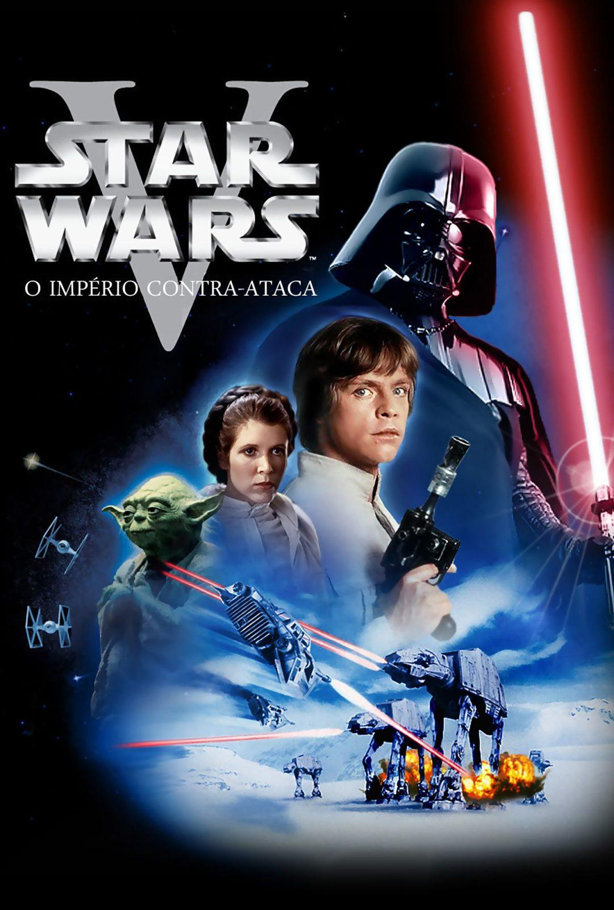

Raul, especialista da comunidade — minha opinião sobre:
Nota de 0-10
Star Wars - Ordem Cronológica
1. The Acolyte (2024)
2.0
1 Temporada
"The Acolyte" tinha potencial, mas foi completamente desperdiçado. Até os episódios 1 e 2 dava para gostar — você via que a série poderia ir longe. Os personagens apresentados eram interessantes, e o elenco tinha nomes fortes como a Dafne Keen (mais conhecida como a filha do Logan) e o Lee Jung-jae (de Round 6), que basicamente carregam a série nas costas. Não duvido nada que o orçamento todo tenha ido para eles.
Por outro lado, a atriz que faz a Mae-Ho e a Osha é péssima na atuação — e o pior: ela teve que interpretar duas personagens horríveis. Você simplesmente não consegue gostar de nenhuma das duas.
Quando chegou o episódio 3, a série desandou de vez. A história do "trauma de infância" é mal escrita e mal executada, parece que o diretor nunca escreveu sobre trauma na vida e jogou qualquer coisa no roteiro. Só serviu para destruir ainda mais a personagem da Mae-Ho.
Depois disso, no episódio 5, aparece um Sith com um capacete no estilo Darth Vader (é incrível como a Disney sempre tenta fazer sua própria versão do Vader, mas nunca consegue). Lembra dos personagens que foram apresentados nos episódios 1 e 2? Toda a construção deles? Pois é, jogaram tudo fora. Mataram todos só para mostrar o “nível” desse Sith.
E o pior de tudo: o cara dá uma cabeçada e uma "maozada" num sabre de luz e ele simplesmente para de funcionar. Inacreditável como a Disney tenta inventar coisas absurdas que só estragam o universo.
A personagem da Dafne Keen, que tinha muito potencial, é jogada no lixo nesse episódio — perdeu qualquer relevância. Depois disso, a série se resume a mostrar como os Jedi são "ruins" e blá blá blá.
Do episódio 7 em diante, voltam a contar a infância das irmãs, agora com mais detalhes... mas é só para encher linguiça e ocupar tempo de episódio.
O último episódio é um desastre. Colocam o Darth Plagueis e o Mestre Yoda só para tentar forçar o público a querer uma segunda temporada. A luta final é horrível, cheia de reviravoltas sem sentido e com um roteiro fraco.
No fim das contas, só vale a pena assistir os dois primeiros episódios. O resto é decepção atrás de decepção.
2. Episódio I: A Ameaça Fantasma (1999)
6.5
Bom, o que posso dizer desse filme? Episódio I – A Ameaça Fantasma é, ao mesmo tempo, um filme bom e mediano. Até entendo as pessoas que não gostam dele, principalmente por causa da politicagem. Acho que trabalharam mal esse aspecto: ficaram o filme todo enrolando com isso, para depois correrem com tudo no final.
Também tem o Anakin, ainda criança, fazendo suas "loucuras" — como entrar em uma nave e, por acaso, destruir o reator de energia que controlava os droides. Essa parte foi muito viajada. E, claro, temos o Jar Jar Binks, um personagem irritante que não faria falta nenhuma se fosse retirado do filme.
Então, entendo quem ache o filme "lento" e "chato". Essas três coisas que citei realmente atrapalham. Mas, mesmo assim, não chegam a destruir a aventura. Os personagens, tirando o Jar Jar, são bem construídos e têm um bom desenvolvimento.
O Darth Maul, mesmo aparecendo pouco, foi um vilão muito bem feito (aprenda, Disney!). Ele realmente representava uma ameaça, e seu nível de perigo ficou claro mesmo com pouco tempo de tela. Gostei muito do mestre Qui-Gon Jinn — ele representou bem o que é ser um Jedi. Foi o principal da trama e teve uma derrota justa para Darth Maul. Isso foi importante para o desenvolvimento do Obi-Wan, então não tenho o que reclamar.
A última coisa: não gostei do CGI. Não chega a atrapalhar o filme, mas os efeitos práticos eram e são muito superiores.
3. Episódio II: Ataque dos Clones (2002)
7.0
O Episódio II de Star Wars não é muito diferente do primeiro em termos de qualidade. O CGI está melhor, mas os dois filmes não têm uma diferença tão grande. O filme começa novamente com a parte política, mas dessa vez ela é mais bem trabalhada.
O foco real do filme é o romance entre Anakin e Padmé. O caçador de recompensas Jango Fett e o Conde Dookan são bem aproveitados, mesmo com pouco tempo de tela. Ainda assim, são vilões interessantes. A parte da investigação do Obi-Wan e a descoberta dos clones é uma surpresa bastante envolvente. Todo mundo gosta dos clones, e aqui, na parte final, é mostrado o potencial deles.
A batalha final é bem melhor do que a do primeiro filme. A cena em que os Jedi aparecem é empolgante, e quando os clones chegam para salvar o dia, fica ainda mais impactante.
Como eu disse, o Episódio II não é tão diferente do I, mas eu prefiro um pouco mais o segundo.
4. Star Wars: The Clone Wars (2008–2020)
A série explora os eventos entre os Episódios II e III, aprofundando as histórias de Anakin, Obi-Wan, Ahsoka Tano e o impacto da guerra nas galáxias.
5. Episódio III: A Vingança dos Sith (2005)
A queda de Anakin para o lado sombrio se concretiza enquanto a República é convertida no Império Galáctico. Obi-Wan enfrenta seu antigo aprendiz.
6. Han Solo: Uma História Star Wars (2018)
A origem de Han Solo, desde seu encontro com Chewbacca até os primeiros passos no submundo galáctico e sua relação com Lando Calrissian.
7. Obi-Wan Kenobi (2022)
A série segue o mestre Jedi Obi-Wan Kenobi enquanto ele vigia Luke Skywalker e enfrenta desafios com os Impérios e caçadores de Jedi.
8. Star Wars Rebels (2014)
A série acompanha um grupo de rebeldes enquanto eles lutam contra o Império Galáctico e tentam inspirar a galáxia a se rebelar.
9. Andor (2022)
A história de Cassian Andor, antes de se unir à Aliança Rebelde, e seu papel no crescimento da resistência contra o Império.
10. Rogue One: Uma História Star Wars (2016)
A missão corajosa de um grupo de rebeldes para roubar os planos da Estrela da Morte e ajudar a Aliança Rebelde a derrotar o Império.
11. Episódio IV: Uma Nova Esperança (1977)
Luke Skywalker, com a ajuda de aliados, tenta destruir a Estrela da Morte e iniciar sua jornada como Jedi.
12. Episódio V: O Império Contra-Ataca (1980)

A Aliança Rebelde enfrenta uma dura batalha contra o Império, enquanto Luke continua sua formação Jedi com Yoda.
13. Episódio VI: O Retorno de Jedi (1983)
Luke enfrenta seu destino final ao confrontar Darth Vader e o Imperador, enquanto a Aliança Rebelde tenta destruir o Império de uma vez por todas.
14. The Mandalorian (2019)
Acompanhamos a jornada de um caçador de recompensas Mandaloriano enquanto ele busca por um misterioso alienígena conhecido como "Baby Yoda".
15. O Livro de Boba Fett (2021–2022)
Após escapar do poço de Sarlacc, Boba Fett assume o controle de Tatooine, tentando estabelecer seu próprio império.
16. Ahsoka (2023)
A série segue a ex-Jedi Ahsoka Tano em sua busca por Ezra Bridger após a batalha contra Thrawn.
17. Skeleton Crew (2023)
A série segue um grupo de crianças perdidas no espaço durante a era da Nova Ordem Jedi.
18. Star Wars: A Resistência (2018)
A série segue Kazuda Xiono enquanto ele se junta à Resistência para espionar os planos da Primeira Ordem.
19. Episódio VII: O Despertar da Força (2015)
Rey, Finn e Poe se juntam à Resistência para lutar contra a Primeira Ordem e encontrar o perdido Luke Skywalker.
20. Episódio VIII: Os Últimos Jedi (2017)
Rey continua sua formação Jedi, enquanto a Resistência tenta resistir ao ataque implacável da Primeira Ordem.
21. Episódio IX: A Ascensão Skywalker (2019)
Rey deve enfrentar o retorno de Palpatine e decidir o futuro da Força enquanto a Resistência enfrenta seu último confronto com a Primeira Ordem.